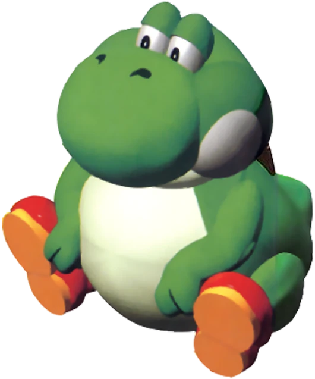

YOSHI EN LA BUSQUEDA DE DEJAR EL LOL

INICIAR
CREDITOS
CREDITOS
PROGRAMADOR GENERAL: Octavio Arias
DISEÑOS DE SPRITES: Maria Zdanovitch
ORIENTACION ACADEMICA: German "Gerson" Sanchez
Volver al Inicio